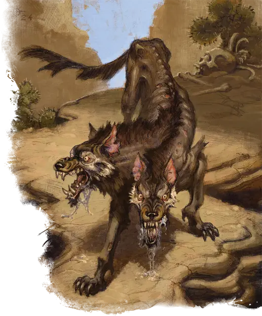

Пёс смерти
Death Dog
Среднее Чудовище, Нейтральное Злое

Класс Защиты 12 Инициатива +2 (12)
Хиты 39 (6к8 + 12)
Скорость 40 футов
| мод | спас | ||
|---|---|---|---|
| СИЛ | 15 | +2 | +2 |
| ЛОВ | 14 | +2 | +2 |
| ТЕЛ | 14 | +2 | +2 |
| мод | спас | ||
|---|---|---|---|
| ИНТ | 3 | −4 | −4 |
| МДР | 13 | +1 | +1 |
| ХАР | 6 | −2 | −2 |
Иммунитеты Бессознательный, Испуганный, Оглохший, Ослеплённый, Очарованный, Ошеломлённый
Чувства Тёмное зрение 120 футов, пассивное Восприятие 15
Языки нет
Опасность 1 (200 опыта; БВ +2)
Действия
Мультиатака. Пёс смерти совершает две атаки Укусом.
Укус. Бросок рукопашной атаки: +4, досягаемость 5 фт. Попадание: 4 (1к4 + 2) Колющего урона. Если цель — существо, она подвергается следующему эффекту. Спасбросок Телосложения: Сл 12. Первый провал: Цель становится Отравленной. Пока она Отравлена, максимум её Хитов не возвращается к нормальному состоянию по завершении Долгого отдыха. Цель повторяет спасбросок спустя каждые 24 часа, оканчивая этот эффект при успехе. Последующие провалы: Максимум Хитов Отравленной цели снижается на 5 (1к10).
Бонус мастерства +2
Среда обитания Пустыня
Сокровища Отсутствуют
Пёс смерти
Двуглавый разносчик болезней
Псы смерти — сущее бедствие для засушливых земель, где они обитают. Эти свирепые двухголовые собаки нападают из засады на тех, кого считают слабее себя, предпочитая раненых и немощных. Они набрасываются безоглядно, стремясь заразить как можно больше жертв своей чумной пастью. Если их отогнать, псы смерти не уходят далеко — они держатся поблизости, позволяя заразе ослабить добычу, прежде чем напасть снова.
Легенды связывают псов смерти со злобными богами смерти, подземным миром и проклятыми правителями. В основе этих поверий лежит та хворь, что они разносят. Совершите бросок по таблице «Симптомы хвори пса смерти» для вдохновения или определите сами, какие признаки проявляются после его укуса. Эти симптомы — чисто внешние и не меняют эффекты действия Укус пса смерти. Симптомы исчезают, когда существо теряет состояние Отравленный от укуса смертельного пса.
Симптомы хвори пса смерти
| 1к6 | Хворь смертельного пса вызывает... |
| 1 | Появление отметин как от собачьих челюстей — будто жертву терзают. |
| 2 | Иссыхание тела, будто под палящим солнцем пустыни. |
| 3 | Далёкий вой или смутный шёпот, слышимый только жертве. |
| 4 | Гниение плоти, точно у трупа. |
| 5 | Зуд, будто под кожей завелись блохи или песок. |
| 6 | Расползающиеся по коже зловещие символы. |